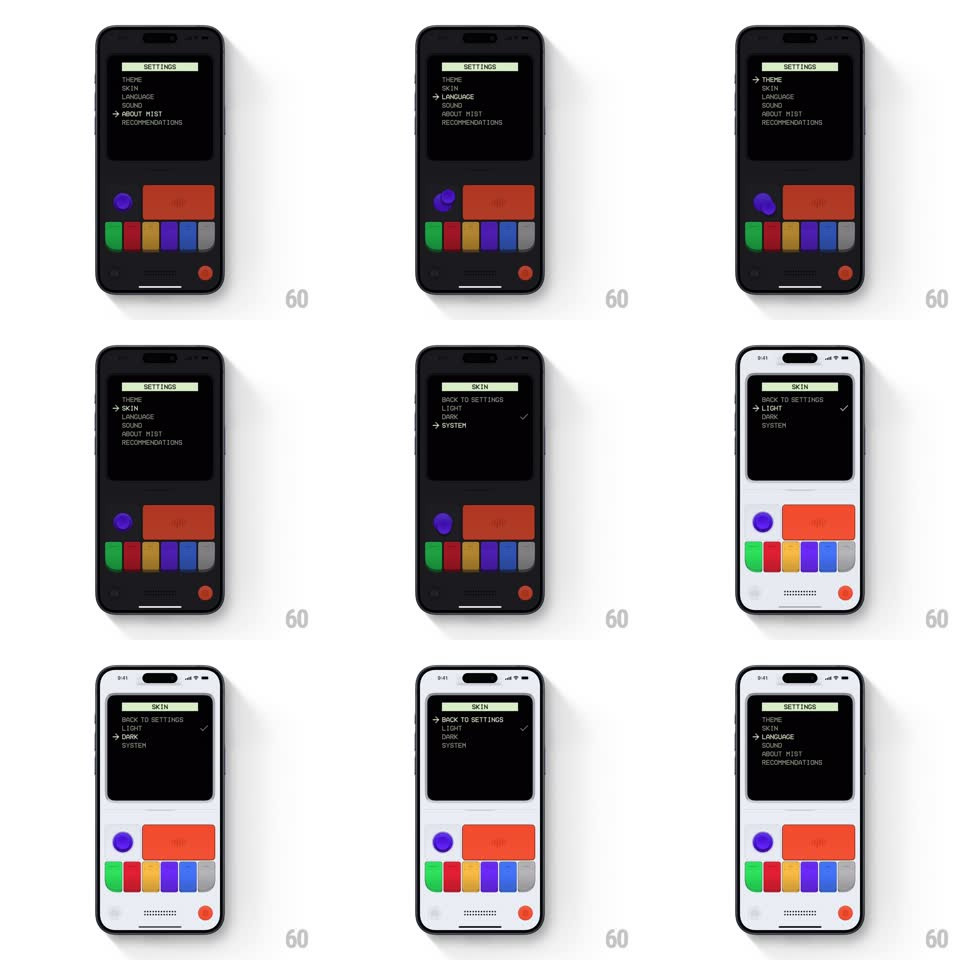

Media
Frame-by-frame

Rebuild this interaction 1:1: Mist's settings menu - a retro text menu (THEME, SKIN, LANGUAGE, SOUND, ABOUT MIST, RECOMMENDATIONS) navigated by rotating the console's knob, where picking SKIN -> LIGHT flips the entire device UI from dark to light theme in one instant repaint.

Rebuild this interaction 1:1: Mist's settings menu - a retro text menu (THEME, SKIN, LANGUAGE, SOUND, ABOUT MIST, RECOMMENDATIONS) navigated by rotating the console's knob, where picking SKIN -> LIGHT flips the entire device UI from dark to light theme in one instant repaint. ## Integration Integration: stack-agnostic spec - springs given as stiffness/damping, timed motions as duration + curve; map every value to your framework and animation library of choice. ## Scene Console body with CRT screen showing a monospace menu under a "SETTINGS" header bar; a small arrow cursor marks the selected row. Control cluster below: purple knob, wide red button, colored pill keys, red power dot. The whole device (body, screen chrome) has both dark and light skins. ## Motion spec Pattern: knob-driven list navigation + instant theme swap. - Rotate the knob: the selection arrow steps one row per detent (15deg of rotation), moving instantly (no slide animation) with a haptic tick and a blip sound; at list ends the arrow stops - no wrap. - The header bar and selected row invert (selected row shows in the accent green). - Press the red button: the highlighted item opens - SKIN drills into its submenu (BACK TO SETTINGS, LIGHT, DARK, SYSTEM), sliding the menu content left in one fast step (120ms, ease-out) rather than a push animation. - Select LIGHT: the checkmark jumps to the new row instantly, and the entire UI - device body, bezel, menu colors - flips to the light theme in a single frame. No fade, no sweep. The flip is the effect. - Back returns to the parent menu with the same instant step. ## Calibration - Every interaction is 1-frame instant except the submenu step - the retro feel comes from zero easing on navigation. - The knob detents are audible/tactile: 40ms tick per step. ## Reduced motion No change - the interactions are already instant. ## Don't miss - The theme flip repaints the console body itself, not just the screen - the whole object changes. - The checkmark swap and the theme flip happen in the same frame.